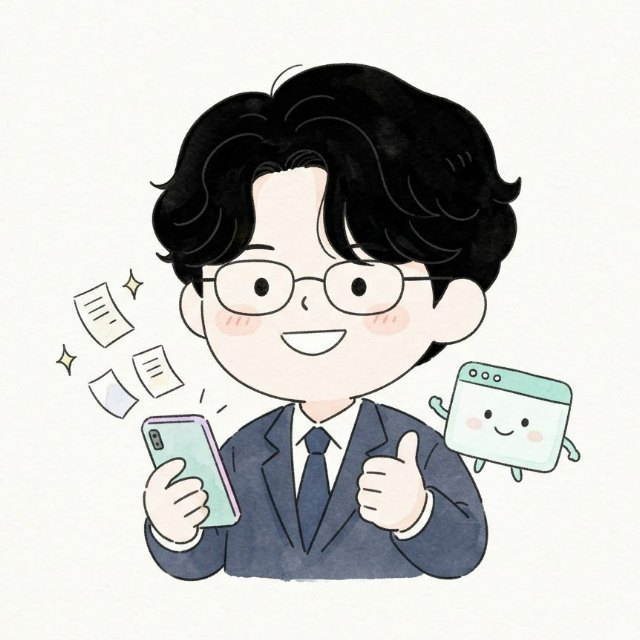

글
현장에서 직접 해 본 것만 씁니다. 코딩을 몰라도 따라 할 수 있게.
강의와 교육
"생각만 하고 시작 못 한 분들이 숟가락을 드는 방법"을 알려 드립니다.
알아서홍보 · 찾아가는 AI 홍보 자동화 세팅
직접 찾아가 블로그와 스레드 홍보가 알아서 굴러가도록 세팅해 드립니다.
사례는 본인 동의를 받아 게시합니다. 사진을 누르면 세팅한 화면을 크게 볼 수 있어요.
만든 도구
귀찮고, 단순한데 양이 많고, "이런 것까지 내가 해야 해?" 싶은 일은 도구로 만듭니다.
채널과 연락
강의, 기고, 세팅 문의는 리틀리 문의 폼으로 받습니다.